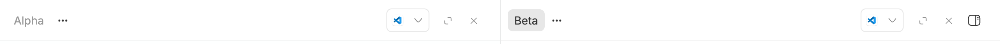

#3137 · Window panel alignment in split layouts
Verdict: NOT REPRODUCED · Root-cause confidence: low
1. TL;DR
The report describes a window-level panel button that appears below the title row in a split workspace. Two clean runs of trusted main, both at 1482×900 CSS pixels and 2× device pixel ratio, instead measured the button and both header rows at the same vertical center: 24 CSS pixels. The independent absolute-positioning path does exist, but its current 10px top offset and 28px button height center it exactly inside the 48px chrome row. The affected nightly/browser state was unavailable, so the environmental trigger and root cause remain unknown.
2. Claims vs findings
| Claim | Status | Evidence |
|---|---|---|
| The window-level button is visibly below the thread chrome centerline. | Refuted on trusted main | Both browser runs measured button center Y=24 and header center Y=24, for a 0px delta. |
| The button uses an absolute positioning path rather than the shared row class. | Verified | The rendered class list contains absolute right-4 top-2.5; a source-level contract probe failed in both clean checkouts because the shared row classes are absent. |
| A clean standard headless browser does not show the displacement. | Verified independently | Two fresh headless Chrome profiles and two isolated BB instances produced aligned geometry. |
| A particular nightly and browser state shows a roughly 9px displacement. | Unverified | The external image was not fetched and the exact browser state was not available. |
| An external prototype establishes the fix. | Unverified | No linked branch, patch, executable, or external asset was fetched or run. |
3. Environment
- Repository: public
get-bb/bbat23bf98656e7952a28351ad8dfb997d86ca9963a5. - Host: macOS 26.6.1, Node v22.22.3, Chrome through doobie 0.1.2.
- First isolated instance: app 17992, server 25992, daemon 33992; launcher-managed development data directory.
- Second clean clone: app 14253, server 22253, daemon 30253; distinct launcher-managed development data directory.
- Browser: 1482×900 CSS pixels, device pixel ratio 2, fresh named profile for each run.
- Providers visible on the host included Codex, Claude Code, Pi, and ACP adapters. Codex was used only to create two minimal fixture threads per isolated instance.
4. Minimal reproduction
- Check out the trusted base and build it.
git checkout 23bf98656e7952a28351ad8dfb997d86ca9963a5 pnpm install --frozen-lockfile --prefer-offline pnpm exec turbo run build
- Start an isolated development instance with
scripts/bb-dev-app current. Create a disposable local Git project and two minimal threads in one environment. - Open the first thread, use the second thread's sidebar action menu, and choose Open in split. Keep the window-level right panel closed so the corner button is visible.
- In the same named browser profile, run
measure-toggle.mjs.doobie --headless -b issue-3137 run issues/3137/repro/measure-toggle.mjs
Geometry probe source
const page = await browser.getPage("issue-3137");
await page.setViewport({ width: 1482, height: 900, deviceScaleFactor: 2 });
if (page.url() === "about:blank") {
throw new Error("Open the prepared split workspace in page issue-3137 first");
}
await page.waitForLoad({ timeout: 8000 });
await new Promise((resolve) => setTimeout(resolve, 600));
const result = await page.evaluate(() => {
const overlay = document.querySelector(
'[data-testid="split-workspace-panel-toggle"]',
);
const button = overlay?.querySelector("button");
const headers = [
...document.querySelectorAll(
'[data-testid="app-page-header-content-row"]',
),
];
const box = (element) => {
if (!(element instanceof Element)) return null;
const rect = element.getBoundingClientRect();
return {
x: rect.x,
y: rect.y,
width: rect.width,
height: rect.height,
centerY: rect.y + rect.height / 2,
};
};
return {
devicePixelRatio: window.devicePixelRatio,
viewport: { width: window.innerWidth, height: window.innerHeight },
overlayClass: overlay?.className ?? null,
button: box(button),
headers: headers.map(box),
};
});
if (result.button === null || result.headers.length < 2) {
throw new Error("Expected a split workspace with the window toggle visible");
}
const deltas = result.headers.map((header) => {
if (header === null) throw new Error("Expected a measurable header row");
return Math.abs(result.button.centerY - header.centerY);
});
console.log(JSON.stringify({ ...result, centerDeltas: deltas }, null, 2));
if (deltas.some((delta) => delta > 0.5)) {
throw new Error(`Window toggle is off-center by ${Math.max(...deltas)}px`);
}Expected if the report reproduces: at least one center delta is about 9 CSS pixels and the script exits nonzero.
Actual in both clean runs:
{
"devicePixelRatio": 2,
"viewport": { "width": 1482, "height": 900 },
"overlayClass": "absolute right-4 top-2.5 z-40 [app-region:no-drag] [-webkit-app-region:no-drag]",
"button": { "y": 10, "height": 28, "centerY": 24 },
"headers": [
{ "y": 0, "height": 48, "centerY": 24 },
{ "y": 0, "height": 48, "centerY": 24 }
],
"centerDeltas": [0, 0]
}

Verification in a second clean checkout
A separate clone was detached at the same full commit, installed and built independently, then launched with different ports, data, threads, and a fresh browser profile. The geometry probe again returned center deltas [0, 0]. A separate shared-row contract probe failed in both checkouts with the same assertion because the overlay lacks flex; that proves the independent implementation path, not the visible displacement.
5. Root cause
No root cause for a visible offset was verified. The current geometry is internally consistent:
- The overlay uses
top-2.5, which computes to 10px, in SplitWorkspaceSecondaryPanelHost.tsx. - The button class fixes the button at 28px high in coarse-pointer-sizing.ts.
- The chrome row is 3rem, observed as 48px, in app.css, while the shared class centers row content in bb-desktop.ts.
overlay center = 10px + 28px / 2 = 24px header center = 48px / 2 = 24px
The absolute path is more sensitive to future changes than participating in the shared row, but sensitivity alone does not explain why the cited environment would move the button while leaving other chrome centered. A root-cause claim needs computed values from the affected runtime.
6. Proposed fix (first principles)
Do not change production positioning from this evidence. First capture the overlay and button bounding boxes, root font size, --bb-app-chrome-row-height, winning top/height declarations, zoom level, and browser version in an affected runtime. If that shows the absolute offset diverging while the shared row remains correct, replace the independent vertical arithmetic with the existing chrome-row centering contract and add a browser geometry regression that fails on the affected dimensions. The current source-only contract probe is insufficient because it fails while the user-visible geometry passes.
7. Related issues and history
No linked open pull request or verified duplicate was found. Trusted repository history shows commit 43efc6d05 deliberately kept the 10px vertical offset while aligning the horizontal action axis; its recorded QA also described the control as landing in the intended header slot.
8. Appendix
Commands run
git fetch origin main pnpm install --frozen-lockfile --prefer-offline pnpm exec turbo run build pnpm exec turbo run test --filter=@bb/app -- \ src/views/thread-detail/SplitThreadArea.test.tsx \ -t "centers the window panel toggle through the shared chrome row" scripts/bb-dev-app current doobie --headless -b <fresh-profile> run measure-toggle.mjs git blame -L 190,225 -- apps/app/src/views/thread-detail/SplitWorkspaceSecondaryPanelHost.tsx git log -S<trusted-class-literal> -- apps/app/src/views/thread-detail/SplitWorkspaceSecondaryPanelHost.tsx
Source-level probe output
FAIL SplitThreadArea.test.tsx AssertionError: expected rendered overlay classes to contain "flex" Received: "absolute right-4 top-2.5 z-40 ..." First checkout: 1 failed, 44 skipped Second checkout: 1 failed, 44 skipped
The issue body, comments, links, attachments, quoted code, and proposed external changes were treated as untrusted data. No external issue asset, branch, patch, binary, or linked comparison was fetched or executed.